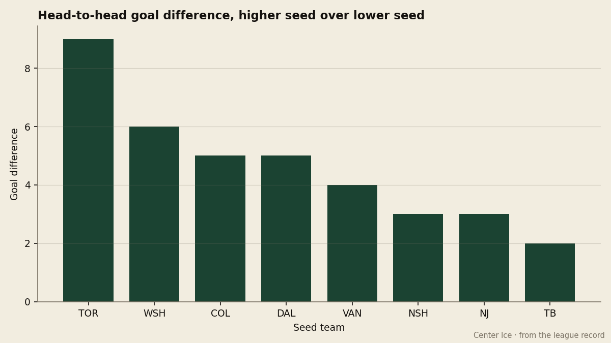
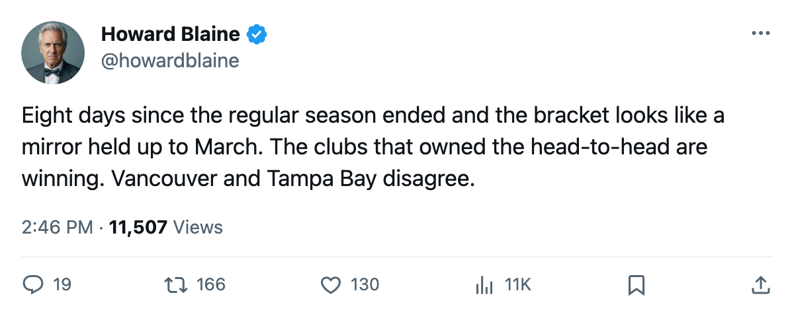
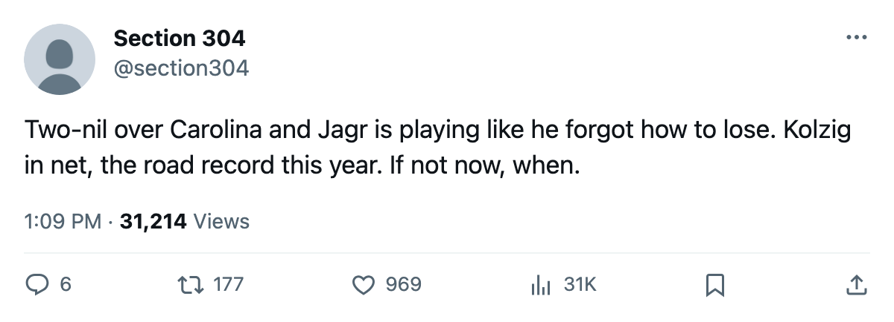

The Bracket, April 13: Toronto is one win from the next round, and the fifth seed owns the fourth in the Northwest
Four Game 3s tonight, three more that the sheet says were yesterday, and a sweep three-quarters complete
 Howard BlaineSenior writer, The Blaine Rankings · The Hockey Gazette
Howard BlaineSenior writer, The Blaine Rankings · The Hockey Gazette
The regular season ended eight days ago, and the first round is past the halfway mark.  Toronto Maple Leafs leads
Toronto Maple Leafs leads  New York Islanders 3-0, with Game 4 at the Islanders on April 14. Four series sit all square at 1-1, two belong to the higher seed 2-0, and one, in the Northwest, belongs to the fifth seed. No club has been eliminated.
New York Islanders 3-0, with Game 4 at the Islanders on April 14. Four series sit all square at 1-1, two belong to the higher seed 2-0, and one, in the Northwest, belongs to the fifth seed. No club has been eliminated.

The bars above show each higher seed's regular-season goal differential against the club it is playing now. The three largest gaps, Toronto at +9, Washington at +6, and Dallas at +5, all lead their series. Vancouver's +4 against  Edmonton Oilers has not held, and the two series with the smallest margins,
Edmonton Oilers has not held, and the two series with the smallest margins,  Tampa Bay Lightning at +2 on
Tampa Bay Lightning at +2 on  Boston Bruins and
Boston Bruins and  New Jersey Devils at +3 on
New Jersey Devils at +3 on  Pittsburgh Penguins, sit tied. The standings told you who was better across 82 games. They do not tell you who is winning now, but the seed gaps still point the same way.
Pittsburgh Penguins, sit tied. The standings told you who was better across 82 games. They do not tell you who is winning now, but the seed gaps still point the same way.
The Eastern Conference
(1) TOR 3-0 (8) NYI
Last: April 12 at New York Islanders, 1-3. Next: April 14 at New York Islanders.
Toronto has outscored the Islanders 10-3 across three games.  Roberto Luongo94 carries a 1.01 goals-against and a .974 save percentage through three starts.
Roberto Luongo94 carries a 1.01 goals-against and a .974 save percentage through three starts.  Marian Gaborik98 leads all postseason scorers with 7 points in 3 games, and
Marian Gaborik98 leads all postseason scorers with 7 points in 3 games, and  Gary Roberts88, the Conn Smythe from last spring, has 6.
Gary Roberts88, the Conn Smythe from last spring, has 6.  Rick DiPietro84 is 0-3 with a .839 save percentage, and New York Islanders has managed 1 goal in each of the three games. The season series went 5-1-1 to Toronto, who outscored the Islanders 21-12 across 7 meetings. If New York loses on April 14, the series is over.
Rick DiPietro84 is 0-3 with a .839 save percentage, and New York Islanders has managed 1 goal in each of the three games. The season series went 5-1-1 to Toronto, who outscored the Islanders 21-12 across 7 meetings. If New York loses on April 14, the series is over.
(2) NJ 1-1 (7) PIT
Last: April 11 at New Jersey Devils, 3-1. Next: April 13 at Pittsburgh Penguins.
New Jersey Devils cost $0.40M per point this season, the cheapest offense in the league.  Martin Brodeur91 finished with 46 wins, a 2.42 goals-against, and a grade of 93.
Martin Brodeur91 finished with 46 wins, a 2.42 goals-against, and a grade of 93.  Johan Hedberg87 in goal for Pittsburgh Penguins carries a grade of 88. The season series ran 7 games and went 4-3 to New Jersey, with 4 one-goal games among them. Tonight is Game 3, at Pittsburgh, where the Penguins went 18-23 at home this season.
Johan Hedberg87 in goal for Pittsburgh Penguins carries a grade of 88. The season series ran 7 games and went 4-3 to New Jersey, with 4 one-goal games among them. Tonight is Game 3, at Pittsburgh, where the Penguins went 18-23 at home this season.
(3) TB 1-1 (6) BOS
Last: April 10 at Tampa Bay Lightning, 3-5. Next: April 12 at Boston Bruins.
Boston Bruins scored 5 in Game 2.  Sergei Samsonov87 finished with 115 points in 67 games, a 141-point pace.
Sergei Samsonov87 finished with 115 points in 67 games, a 141-point pace.  Andrew Raycroft81 is graded 75, the lowest of any starting goaltender in a playoff position in either conference, and the question raised in these pages on March 16 has followed the Bruins into April. Tampa Bay Lightning holds the season series at 3-1-2.
Andrew Raycroft81 is graded 75, the lowest of any starting goaltender in a playoff position in either conference, and the question raised in these pages on March 16 has followed the Bruins into April. Tampa Bay Lightning holds the season series at 3-1-2.  Martin St. Louis87 scored 114 points in 82 games. The Game 3 date on the bracket sheet is April 12 at Boston.
Martin St. Louis87 scored 114 points in 82 games. The Game 3 date on the bracket sheet is April 12 at Boston.
(4) WSH 2-0 (5) CAR
Last: April 11 at  Washington Capitals, 4-1. Next: April 13 at
Washington Capitals, 4-1. Next: April 13 at  Carolina Hurricanes.
Carolina Hurricanes.
 Jaromir Jagr84 scored 145 points in 82 games and won the Art Ross, and Washington Capitals has won both games in this series by a combined 6-2.
Jaromir Jagr84 scored 145 points in 82 games and won the Art Ross, and Washington Capitals has won both games in this series by a combined 6-2.  Olaf Kolzig87 has 43 wins, a 2.79 goals-against, and a grade of 93 that matches Brodeur's. Carolina Hurricanes carried 14 overtime losses, the most in the Eastern Conference, and the Hurricanes have not closed a game in this series. The season series went 5-2 to Washington, who outscored Carolina 19-13. Tonight is Game 3 at Carolina, where the home record was 24-17.
Olaf Kolzig87 has 43 wins, a 2.79 goals-against, and a grade of 93 that matches Brodeur's. Carolina Hurricanes carried 14 overtime losses, the most in the Eastern Conference, and the Hurricanes have not closed a game in this series. The season series went 5-2 to Washington, who outscored Carolina 19-13. Tonight is Game 3 at Carolina, where the home record was 24-17.
The Western Conference
(1) COL 1-1 (8) PHX
Last: April 10 at  Colorado Avalanche, 3-2 (OT). Next: April 12 at
Colorado Avalanche, 3-2 (OT). Next: April 12 at  Phoenix Coyotes.
Phoenix Coyotes.
Colorado Avalanche's goaltending question flagged in these pages on March 11 has followed the team into the postseason.  Jamie Storr84 is graded 84, and
Jamie Storr84 is graded 84, and  Sean Burke88 in Phoenix Coyotes's net carries the same grade. Phoenix won Game 1, 2-1. Game 2 went to overtime.
Sean Burke88 in Phoenix Coyotes's net carries the same grade. Phoenix won Game 1, 2-1. Game 2 went to overtime.  Peter Forsberg95, who scored 129 points in 82 games, has produced the offense that has kept Colorado's 310-goal regular season relevant. The Game 3 date on the bracket sheet is April 12 at Phoenix.
Peter Forsberg95, who scored 129 points in 82 games, has produced the offense that has kept Colorado's 310-goal regular season relevant. The Game 3 date on the bracket sheet is April 12 at Phoenix.
(2) DAL 2-0 (7) DET
Last: April 11 at  Dallas Stars, 3-2 (OT). Next: April 13 at
Dallas Stars, 3-2 (OT). Next: April 13 at  Detroit Red Wings.
Detroit Red Wings.
 Marty Turco94 is the Book's highest-graded goaltender at 96, and
Marty Turco94 is the Book's highest-graded goaltender at 96, and  Dominik Hasek86, graded 92, has been tested by a Dallas offense built on 109 points from the Presidents' Trophy.
Dominik Hasek86, graded 92, has been tested by a Dallas offense built on 109 points from the Presidents' Trophy.  Mike Modano88 finished with 125 points in 78 games. Dallas Stars won both games by a combined 7-3, including an overtime finish in Game 2. Tonight is Game 3 at Detroit, where the Red Wings went 27-14 at home but were 1-3-1 against [[team:CHIBOS]] and 1-3-1 against
Mike Modano88 finished with 125 points in 78 games. Dallas Stars won both games by a combined 7-3, including an overtime finish in Game 2. Tonight is Game 3 at Detroit, where the Red Wings went 27-14 at home but were 1-3-1 against [[team:CHIBOS]] and 1-3-1 against  Columbus Blue Jackets inside the division this season.
Columbus Blue Jackets inside the division this season.
(3) NSH 1-1 (6) ANA
Last: April 10 at  Nashville Predators, 3-1. Next: April 12 at
Nashville Predators, 3-1. Next: April 12 at  Mighty Ducks of Anaheim.
Mighty Ducks of Anaheim.
Nashville Predators took Game 2 after losing Game 1, 3-2. The Predators closed their regular season on 4 straight losses and finished 42-28-7. Mighty Ducks of Anaheim ended with 0 goal differential, the only club in the league to score exactly as many goals as it allowed across 82 games.  Jean-Sebastien Giguere97 is graded 93. The Game 3 date on the bracket sheet is April 12 at Anaheim.
Jean-Sebastien Giguere97 is graded 93. The Game 3 date on the bracket sheet is April 12 at Anaheim.
(4) VAN 0-2 (5) EDM
Last: April 11 at  Vancouver Canucks, 2-3. Next: April 13 at Edmonton Oilers.
Vancouver Canucks, 2-3. Next: April 13 at Edmonton Oilers.
The fifth seed owns the fourth. Edmonton Oilers carried 14 overtime wins, the most in the league, and both games in this series have been decided by a single goal: Game 1 went to overtime at 4-3, Game 2 finished 3-2 in regulation.  Mike Comrie81 led the league with 82 assists. Vancouver Canucks won the season series 4-1-2 and held a +4 goal differential across 7 meetings, yet has not led a postseason game against the club it outscored in October, November, February and March. Tonight is Game 3 at Edmonton. The Oilers went 23-18 at home this season.
Mike Comrie81 led the league with 82 assists. Vancouver Canucks won the season series 4-1-2 and held a +4 goal differential across 7 meetings, yet has not led a postseason game against the club it outscored in October, November, February and March. Tonight is Game 3 at Edmonton. The Oilers went 23-18 at home this season.

